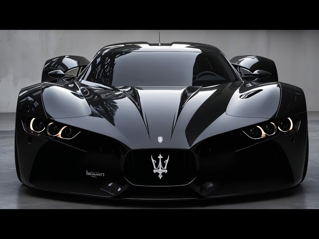

Contents hide (Top) History Automobiles Motorsport See also Notes References Additional sources External links Maserati Article Talk Read View source View history Tools Appearance hide Text Small Standard Large Width Standard Wide Color (beta) Automatic Light Dark Coordinates: 44.6493°N 10.9408°E Page semi-protected From Wikipedia, the free encyclopedia This article is about the Italian automobile manufacturer. For Maserati models produced, see List of Maserati vehicles. For other uses of the name, see Maserati (disambiguation). Maserati S.p.A. Headquarters in Modena, Italy Company type Subsidiary (S.p.A.) Industry Automotive Predecessor Officine Alfieri Maserati S.p.A. Founded 1 December 1914; 110 years ago Bologna, Italy Founder Alfieri Maserati Headquarters Modena, Italy 44.6493°N 10.9408°E Area served Worldwide Key people Santo Ficili (CEO) Davide Grasso (ex CEO)[1] Products Luxury vehicles Production output Decrease 19,000 units (2019) 35,000 units (2018) Revenue Decrease €1.603 billion (2019) €2.663 billion (2018) Net income Decrease –€199 million (2019) €151 million (2018) [2] Number of employees 1,100 (2013) Parent Stellantis Website www.maserati.com Footnotes / references [3] Maserati S.p.A. (Italian: [mazeˈraːti]) is an Italian luxury vehicle manufacturer. Established on 1 December 1914 in Bologna, Italy,[4] the company's headquarters are now in Modena, and its emblem is a trident. The company has been owned by Stellantis since 2021. History The Maserati brothers See also: Maserati Brothers Ettore, Bindo, Ernesto, and Alfieri Maserati The Maserati brothers, Alfieri (1887–1932), Bindo (1883–1980), Carlo (1881–1910), Ettore (1894–1990), and Ernesto (1898–1975), were all involved with automobiles from the beginning of the 20th century. Alfieri, Bindo, and Ernesto built 2-litre Grand Prix cars for Diatto. In 1926, Diatto suspended the production of race cars, leading to the creation of the first Maserati and the founding of the Maserati marque. One of the first Maseratis, driven by Alfieri, won the 1926 Targa Florio. Maserati began making race cars with 4, 6, 8, and 16 cylinders (two straight-eights mounted parallel to one another). The trident logo of the Maserati car company, designed by Mario Maserati, is based on Neptune's trident of Fountain of Neptune in Bologna's Piazza Maggiore. The trident logo of the Maserati car company, designed by Mario Maserati, is based on Neptune's trident of the Fountain of Neptune in Bologna's Piazza Maggiore. In 1920, one of the Maserati brothers used this symbol in the logo at the suggestion of family friend Marquis Diego de Sterlich. It was considered particularly appropriate for the sports car company due to the fact that Neptune represents strength and vigour; additionally the statue is a characteristic symbol of the company's original home city.[5] Alfieri Maserati died in 1932, but three other brothers, Bindo, Ernesto, and Ettore kept the firm going. Orsi ownership In 1937, the remaining Maserati brothers sold their shares in the company to the Adolfo Orsi family, who, in 1940, relocated the company headquarters to their home town of Modena,[4] where it remains to this day. The brothers continued in engineering roles with the company. Racing successes continued, even against the giants of German racing, Auto Union and Mercedes. Indianapolis 500 Wilbur Shaw's Maserati 8CTF winning car from the 1939 and 1940 Indianapolis 500s In back-to-back wins in 1939 and 1940, an Maserati 8CTF won the Indianapolis 500, making Maserati the only Italian manufacturer ever to do so.[6] The second world war then intervened and Maserati abandoned car making to produce components for the Italian war effort. During this time, Maserati worked in fierce competition to construct a V16 town car for Benito Mussolini before Ferry Porsche of Volkswagen built one for Adolf Hitler. This failed, and the plans were scrapped. Once peace was restored, Maserati returned to making cars; the Maserati A6 series did well in the post-war racing scene. Juan-Manuel Fangio driving a Maserati 250F Key people joined the Maserati team. Alberto Massimino, a former FIAT engineer with both Alfa Romeo and Ferrari experience, oversaw the design of all racing models for the next ten years. With him joined engineers Giulio Alfieri, Vittorio Bellentani, and Gioacchino Colombo. The focus was on the best engines and chassis to succeed in car racing. These new projects saw the last contributions of the Maserati brothers, who, after their 10-year contract with Orsi expired, went on to form O.S.C.A. This new team at Maserati worked on several projects: the Maserati 4CLT, the Maserati A6 series, the 8CLT, and, pivotally for the future success of the company, the A6GCS. Juan Manuel Fangio driving for Maserati won his fifth and final Formula One World Drivers' Champions. Formula One Main article: Formula One The famous Argentinian grand prix driver Juan-Manuel Fangio raced for Maserati for a number of years in the 1950s, achieving a number of stunning victories including winning the Formula One World Championship in 1957 in the 250F. World Sportscar Championship Main article: World Sportscar Championship Other racing projects in the 1950s were the Maserati 200S, Maserati 300S, Maserati 350S, and Maserati 450S, followed in 1961 by the famous Maserati Birdcage Tipo 61. Mille Miglia Main article: Mille Miglia Maserati retired from factory racing participation because of the Guidizzolo tragedy[a] during the 1957 Mille Miglia, though they continued to build cars for privateers. Maserati became more and more focused on building road-going grand tourers. 1958 Maserati 3500 GT The 1957 3500 GT marked a turning point in the marque's history, as its first ground-up grand tourer design and first series-produced car.[citation needed] Production jumped from a dozen to a few hundred cars a year. Chief engineer Giulio Alfieri took charge of the project and turned the 3.5-litre inline six from the 350S into a road-going engine. Launched with a Carrozzeria Touring 2+2 coupé aluminium body over superleggera structure, a steel-bodied short wheelbase Vignale 3500 GT Spyder open top version followed in 1959. The 3500 GT's success, with over 2,200 made, was critical to Maserati's survival in the years following withdrawal from racing. The 3500 GT also provided the underpinnings for the small-volume V8-engined 5000 GT, another seminal car for Maserati. Born from the Shah of Persia's whim of owning a road car powered by the Maserati 450S racing engine, it became one of the fastest and most expensive cars of its days. The third to the thirty-fourth and last example produced were powered by Maserati's first purely road-going V8 engine design. In 1962, the 3500 GT evolved into the Sebring, bodied by Vignale and based on the shorter wheelbase convertible chassis. Next came the two-seater Mistral coupé in 1963 and Spider in 1964, both powered by a six-cylinder engine and styled by Pietro Frua. 1971 Maserati Ghibli SS 4.9 Coupe In 1963, the company's first saloon was launched, the Quattroporte, also styled by Frua. If the 5000 GT inaugurated the marque's first road-going V8, the Quattroporte's Tipo 107 4.2-litre DOHC V8 was the forefather of all Maserati V8s up to 1990. The Ghia-designed Ghibli coupé was launched in 1967. It was powered by a 4.7-litre dry sump version of Maserati's quad cam V8. The Ghibli Spyder and high performance 4.9-litre Ghibli SS followed. Citroën ownership 1969 Maserati Ghibli Spyder Maserati Indy In 1968, Maserati was taken over by Citroën. Adolfo Orsi remained the nominal president, but Maserati was controlled by its new owner. The relationship started as a joint venture, made public in January 1968,[7] in which Maserati would design and manufacture an engine for Citroën's upcoming flagship called SM. Launched in 1970, the SM was a four-seat front-wheel-drive coupé, powered by a Maserati Tipo C114 2.7-litre 90° V6 engine; this engine and its gearbox had been used in other vehicles, such as rally-prepared Citroën DSs used by Bob Neyret in Bandama Rally, and in the Ligier JS2. The Maserati Bora is the first mid-engine Maserati road legal automobile. With secure financial backing, new models were launched and built in much greater numbers than years prior. Citroën borrowed Maserati's expertise and engines for the SM and other vehicles, and Maserati incorporated Citroën's technology, particularly in hydraulics. Engineer Giulio Alfieri was key to many of the ambitious designs of this period. The first new arrival was the 1969 Maserati Indy, a Vignale-bodied four-seater GT with a traditional V8 drivetrain, 1,100 units of the Indy were made. Maserati Boomerang concept car designed by Giorgetto Giugiaro based on Maserati Bora In 1971, the Maserati Bora was the company's first series production mid-engine model, an idea agreed with administrator Guy Malleret shortly after the 1968 takeover. The Bora ended Maserati's reputation for producing fast but technologically out of date cars, being the first Maserati with four wheel independent suspension. In contrast, competitor Lamborghini had used independent suspension in 1964.[8] Maserati Merak In 1972, the Bora was transformed to the Maserati Merak, now employing a Tipo 114 SM-derived V6 enlarged to 3.0-litres.[9] Citroën never developed a 4-door version of the SM – instead Maserati developed the Maserati Quattroporte II, which shared most of its mechanical parts with the SM, including the mid-engine, front-wheel-drive layout, and six headlight arrangement.[10] To power this large car, Alfieri developed a V8 engine from the SM's V6 on the behest of Factory Manager Guy Malleret. The engine was rated at 260 PS (190 kW; 260 hp) and fitted to a lightly modified SM, which proved that the chassis could easily handle the power increase.[11] Citroën's and Maserati's financial difficulties hampered the type homologation process; the development costs for the stillborn saloon further aggravated Maserati's situation. Only a dozen Quattroporte IIs were ever produced, all with the V6. The replacement for the successful Ghibli was the Bertone-designed Maserati Khamsin, a front-engine grand tourer introduced in 1972 and produced until 1974; it combined the traditional Maserati V8 GT layout with modern independent suspension, unibody construction, and refined Citroën technologies such as DIRAVI power steering. Crisis years The Tipo C114 Maserati V6 in a Citroën SM Meanwhile, the 1973 oil crisis put the brakes on the ambitious expansion of Maserati; demand for fuel-hungry sports cars and grand tourers shrank drastically. Austerity measures in Italy meant that the domestic market contracted by 60–70%.[12] All of the main Italian GT car manufacturers were heavily affected, having to lay off workers in order to empty lots of unsold cars. Maserati received the hardest blow, as its home market sales accounted for over half of the total—in contrast with Ferrari's 20%.[13] In this situation, the only Maserati automobile that continued to sell in appreciable numbers was the small-displacement Merak. In 1974, with the 1973–75 recession at its climax, things took a turn for the worse. Citroën went bankrupt and its incorporation into PSA Peugeot Citroën begun. The year closed with domestic sales tumbling from 1973's 360 to 150 units,[13] and losses exceeding the share capital. On 22 May 1975, a press release from Citroën management abruptly announced Maserati had been put into liquidation.[14] The workforce immediately picketed the factory, but production was not halted. Trade unions, the mayor of Modena, and local politicians mobilised to save the 800 jobs; industry minister Carlo Donat-Cattin even flew to Paris to meet Citroën chairman Francois Rollier. An agreement was reached in June,[15] after several meetings and assemblies. During one of these meetings, Citroën liquidators disclosed that a possible Italian buyer had shown up, and the name of Alejandro de Tomaso was put forth for the first time.[16] Citroën accepted to suspend liquidation as requested by the Italian government, which on its part guaranteed six months of special redundancy fund to pay the salaries. De Tomaso era On 8 August 1975, an agreement was signed at the Ministry of Industry in Rome, and property of Maserati passed from Citroën to Italian state-owned holding company GEPI[b] and Alejandro de Tomaso, an Argentinian industrialist and former racing driver, became president and CEO.[17][18] As of December 1979, GEPI's quota amounted to 88.75% of Maserati,[19] the remaining 11.25% stake was being controlled by de Tomaso through a holding company which grouped his automotive interests in Maserati and Innocenti. After de Tomaso bought Maserati in August 1975, he dismissed long time Chief Engineer Alfieri on the day of taking over the business.[20] Beginning in 1976, new models were introduced, sharing their underpinnings—but not their engines—with De Tomaso cars; first came the Kyalami grand tourer, derived from the De Tomaso Longchamp, restyled by Frua and powered by Maserati's own V8. Following the Kyalami was the Giugiaro-designed Quattroporte III based on the De Tomaso Deauville, which was introduced in 1976 and put on sale in 1979. The Bora's sales dwindled down; the Khamsin was discontinued between 1982 and 1983. Progressively stripped of its Citroën-derived parts, the Merak continued to sell over one hundred units a year, until 1982. Despite the downturn in sales, awareness of the brand increased during this time as a result of the popular song Life's Been Good by Joe Walsh, which contained the lyrics "My Maserati does one eighty-five."[21] The Biturbo A 1985 Maserati Biturbo The 1980s saw the company largely abandoning the mid-engine sports car in favour of a compact front-engine, rear-drive coupé, the Biturbo.[22] Of fairly conventional construction, the Biturbo's highlight was its twin-turbocharged V6 engine, the first for a production car. This engine, descending from the 90° V6 engineered by Giulio Alfieri, was fitted in a large number of models, all sharing key components; every new Maserati launched up to the 1990s would be based on the Biturbo's platform. The Biturbo family was extremely successful at exploiting the aspirational image of the Maserati name—selling 40,000 units. In 1983 and 1984, the range was extended to include saloons (the 425 and 420) and a cabriolet (the Zagato-bodied Spyder), respectively on a long and short wheelbase of the Biturbo platform. During 1984, Chrysler bought a 5% share in Maserati. Following an agreement between De Tomaso's friend and Chrysler head Lee Iacocca, a joint venture was signed. Maserati would go on to produce a car for export to the American market, the Chrysler TC by Maserati, with Chrysler-sourced engines. In July of that same year, a merger between Maserati and Nuova Innocenti was decided; it was carried out in 1985.[23] Chrysler upped its stake to 15.6% by underwriting three quarters of a 75 billion Lire capital raise in 1986.[24] New Biturbo-based cars and model evolutions were launched year after year. In 1984, it was the 228, a large coupé built on the long wheelbase saloon chassis, with a new 2.8-litre version of the twin-turbocharged V6. Weber Fuel injection was phased in starting in 1986, bringing improved reliability and a host of new model variants. The same year, the ageing Quattroporte III was updated and marketed as the luxurious Royale, built to order in an handful of examples a year; its discontinuation in 1990 marked the disappearance of Maserati's four-cam V8 engine, a design that could trace its roots back to the 450S racer and the legendary 5000 GT. In 1987, the 2.8-litre 430 topped the saloon range. 1988 brought the Karif, a two-seater, based on the short wheelbase Spyder chassis. Meanwhile, the Biturbo name was dropped altogether, as updated coupés and saloons were updated and became the 222 and 422. 1989 marked the reintroduction of an eight-cylinder grand tourer: the Shamal, built on a modified short wheelbase Biturbo chassis, clad in new muscular bodywork styled by Marcello Gandini. It was powered by an all-new twin-turbocharged 32-valve V8 engine paired to a 6-speed gearbox. 2.0-litre, 24-valve V6 engines were also added to the Shamal range. De Tomaso-FIAT years Maserati Ghibli II In October 1989, De Tomaso bought the remaining GEPI quota. In December, FIAT entered in Maserati's history. Maserati and Innocenti were separated; Innocenti Milano S.p.A., the company that sold Innocenti cars, continued its business under a 51% FIAT Auto ownership. All of the Modena and Lambrate plants went to a newly created company, the still existent Maserati S.p.A.; 49% of it was owned by FIAT Auto and 51% was controlled by De Tomaso through the old company, Officine Alfieri Maserati.[25][26] In the early 1990s, a mid-engine sports car prototype was developed, the Maserati Chubasco, which was supposed to be built in 1992, but the project proved very expensive and was shelved. It featured Gandini-designed body, a V8 powertrain, and a backbone chassis. The project was cancelled, as part owner Fiat deemed the project to be too close to Ferrari in the marketplace.[27] Starting in 1990, the entire range of the Biturbo received a facelift designed by Marcello Gandini, on the lines of the Shamal's styling. The last version of the Biturbo coupé was called Racing. It was a transitional model in which several features to be found on the upcoming Ghibli were tested. The Ghibli II was introduced in 1992. It was a six-cylinder coupé, with modified Biturbo underpinnings dressed by new Gandini bodywork (toned down from the Shamal) and the latest evolution of the 24-valve twin-turbocharged V6 with record breaking specific output. The underpinnings of the stillborn Chubasco gave birth to the Maserati Barchetta, a small open top mid-engine sports car styled by Synthesis Design's Carlo Gaino.[28] a one-make racing series was held in 1992 and 1993, using the Barchetta Corsa racing version; the road-going Barchetta Stradale was never put into production. Just 17 units of the Barchetta were produced. Between 1992 and 1994, all models save for the Ghibli and Shamal were progressively discontinued. FIAT ownership Maserati Quattroporte IV On 19 May 1993, 17 years after having rescued it from liquidation, Alejandro De Tomaso sold his 51% stake in Maserati to FIAT, which became the sole owner.[18][29] In 1994, the aging Quattroporte III/Royale was replaced by the Quattroporte IV which was ultimately based on Biturbo underpinnings. Styled by Marcello Gandini, it was initially available with a V6 engine shared with the Ghibli II. A more powerful V8 variant was made available in 1996 and "Seicilindri" and "Ottocilindri" (six and eight cylindres in Italian) badging was introduced to distinguish between the two models. The engine of the V8 model was a development of the Shamal's V8.[30] Over two decades after the ill-fated Chrysler TC by Maserati during Chrysler's brief ownership stake in Maserati, the two companies became interconnected again when FIAT purchased majority control of Chrysler in 2011 as a result of Chrysler's bankruptcy. Maserati and Citroen also later interconnected for the first time since 1975, following the Stellantis merger in 2021. Ferrari In July 1997, FIAT sold a 50% share in the company to Maserati's long-time arch-rival Ferrari (Ferrari itself being owned by FIAT).[4] In 1999, Ferrari took full control, making Maserati its luxury division. A new factory was built, replacing the existing 1940s-era facility. The steps taken by the new parent company resulted in the improved Quattroporte Evoluzione which was introduced at the March 1998 Geneva Motor Show.[31] Maserati 3200 GT A distinctive feature of the 3200 GT were its boomerang shaped rear lights. In 1998, a new chapter began in Maserati's history when the company launched the 3200 GT. This two-door coupé is powered by a 3.2 L twin-turbocharged V8 derived from the Shamal engine, which is rated at 370 horsepower (280 kW). In 2002 the 3200 GT was replaced by the Maserati Coupé and Spyder; evolved from the 3200, these cars used an all-new, naturally aspirated, dry sump 4.2-litre V8 with a transaxle gearbox. In turn Coupé and Spyder were replaced by the GranTurismo and GranCabrio. Meanwhile, two new models were shown to the public: the Maserati MC12 road supersports and successful GT racer with a Ferrari Enzo–derived chassis and engine and the new Quattroporte, a luxury saloon with the 4.2-litre V8 engine of the Gran Turismo.[32] In 2001, Ferrari decided to change all of the old tooling and installed high-tech devices in the Modena factory.[33] Maserati MC12 Since early 2002, Maserati once again entered the United States market,[34] which has quickly become its largest market worldwide. The company has also re-entered the racing arena with their Trofeo and, in December 2003, the MC12 (formerly known as the MCC), which was developed according to FIA GT regulations and has since competed with great success in the world FIA GT championship, winning the teams championship three consecutive times from 2005 to 2007. The MC12 has also been raced in various national GT championship as well as in the American Le Mans series. The Maserati MC12 is based on the Ferrari Enzo sports car;[35] 50 street-legal homologation models (roadsters and coupés) have been sold. The Maserati and Alfa Romeo Group under FIAT Group Maserati's "Trident" badge Maserati Birdcage 75th The Maserati and Alfa Romeo group, under FIAT Group, started in 2005, when Maserati was split off from Ferrari and partnered with Alfa Romeo.[36][37] On 9 June 2005, the 20,000th Maserati, a Quattroporte V, left the factory.[38] In the second quarter of 2007, Maserati made profit for the first time in 17 years under FIAT ownership.[39] Maserati Granturismo I On January 22, 2010, FIAT announced that it had created a new partnership/brand group for Alfa Romeo, Maserati, and Abarth. The group was led by Harald J. Wester, the current CEO of Maserati. Sergio Marchionne stated that "[the] purpose of bringing the Alfa Romeo, Maserati and Abarth brands under the same leadership is to emphasize and leverage the value of the shared qualities of the three brands in terms of their sporting characteristics and performance."[40] Abarth stayed under Wester's leadership until 2013, leaving Maserati and Alfa Romeo in the brand group, led by Wester.[41] Although Maserati and Alfa Romeo are in a brand group, Alfa Romeo is structured under FCA Italy S.p.A., which itself is structured under FCA, whereas Maserati is structured solely under FCA. In addition, in an interview with Wester in 2015, he clarified that his "role at Maserati is different from that in the Alfa Romeo as the latter is better integrated into the FIAT Group" and that "the new Alfa car won't share any parts with the current Maserati model. I'm not planning any technical merging of these two makes."[42] In 2013, Maserati started its expansion with the Quattroporte VI, which was designed to better compete with the Mercedes-Benz S-Class. This was followed by the introduction of the Ghibli, which was slated to compete against the Mercedes-Benz E-Class and the BMW 5 Series. The 100th anniversary of the foundation Maserati Alfieri at Geneva International Motor Show in 2014 In 2014, to celebrate the centenary of its foundation, it released a concept car called Maserati Alfieri, in honor of the brand's founder, Alfieri Maserati. On May 6, 2014, Maserati confirmed production of the Maserati Levante SUV and the Maserati Alfieri. However, the Maserati Alfieri concept, which received great critical and commercial success, never came to production. This model was supposed to replace the Maserati GranTurismo, but this production change was cancelled due to the success of the GranTurismo, which underwent improvements and updates until 2019. Along with their expansion, Maserati started their re-entrance into the high-performance car field, in order to compete with brands such as Mercedes-AMG, BMW M, Porsche, Jaguar, and in certain cases, Ferrari. This was done by introducing Maserati models that have high power output engines, higher performance components, and better handling. The top-of-the-line variants of the Quattroporte VI, Ghibli, and Levante have 570 PS (419 kW; 562 hp) V8 engines with all-wheel drive, in order to better compete with their rival offerings.[43][44] The 2014 Maserati lineup, as shown at the 100th Year Anniversary in Autoworld Brussels. From left to right: Maserati GranCabrio Sport, Maserati Ghibli III and Maserati Quattroporte VI Maserati sales in 2013 was 15,400 units, which is up from just over 6,000 units worldwide in 2012 (2013 included the release of the new Quattroporte and Ghibli towards the end of the year, and thus the first year to fully represent the sales inclusive of these models is 2014).[45] In May, 2014, Maserati sold a company record of over 3,000 cars worldwide, causing them to increase production of the Ghibli and Quattroporte.[46] For that same month in the United States, Maserati sold 1,114 vehicles, which is up 406.19% over the same month in the previous year in the United States.[47] Maserati's best month of sales in the United States was September 2014, with 1,318 units sold.[48] The month in 2014 where the increase on sales for the same month of the previous year was the highest was May, with a volume increase of 406.19%.[48] The sales target for 2018 was 75,000 units worldwide.[45] 2014 marked a historic record of 13,411 total units sold in North America for the year, a 169% increase versus 2013, boasting the highest-ever overall sales year for Maserati North America, Inc.[49] Worldwide, in 2014 Maserati sold about 36,500 cars, a 136% increase over 2013.[50] Harald J. Wester stated that Maserati would not surpass the 70,000 sales per year mark, and that Maserati would maintain its current position in the higher end of the luxury sports car market, rather than expanding downmarket and making vehicles smaller and less expensive than the Ghibli and Levante (such as those similar to the Audi Q5 and Mercedes-Benz C-Class), as other FCA brands, specifically Alfa Romeo, are in those market spaces.[42] Since 2009, Marco Tencone was the head designer of Maserati cars, although, in late 2015, he was announced as remaining in executive positions at Lancia and FIAT only.[51] FCA Maserat Levante 2021 Maserati MC20 In 2014, Fiat S.p.A. merged with American automaker Chrysler to form Fiat Chrysler Automobiles. Under FCA, new models were released that met with excellent critical and commercial success, but above all, sales, such as the Maserati Levante, Maserati's first SUV. Furthermore, the Maserati Ghibli and Maserati Quattroporte also confirmed excellent sales. The Maserati GranTurismo was produced until 2019, confirming its huge success for the brand. Furthermore, in 2020, a year marred by the COVID-19 pandemic, a new sports car, the Maserati MC20, was released, which achieved great critical and commercial success. The Maserati range consolidated the brand's profitability and image and prestige. Stellantis Maserati Grecale 2025 Maserati MCPura Subsequently, in 2021, FCA merged with the French PSA Group to form Stellantis, reuniting Maserati with Citroën. Under Stellantis, a new SUV will be released starting in 2022 alongside the Maserati Levante, the Maserati Grecale, smaller in size than the Levante, which achieves good critical and sales success. In 2023, production of the Maserati Ghibli and Maserati Quattroporte was halted, while the new Maserati GranTurismo was released also with the new electric motor called Folgore. In 2024, the GranCabrio, an open-top variant based on the GranTurismo, was released, while the production of Maserati Levante was halted. However, starting in 2024, uncertainties surrounding the transition from combustion engines to electric ones and in 2025, uncertainties due to the application of tariffs leaded to a weakening of both production and sales for the entire Stellantis group and consequently also for Maserati. The inefficiencies of Stellantis's commercial strategy in 2024, which resulted in a drastic loss of both production and sales and consequently market share, led to the resignation of Stellantis CEO Carlos Tavares and a renewal or redefinition of the positions of all the group's corporate managers, and led to a period of great uncertainty within Maserati. In 2025, the new Stellantis CEO, Antonio Filosa, supported by Santo Ficili[52], the CEO of Maserati, relaunched the brand through a commercial policy aimed at building customer loyalty, drawing on the brand's glorious history in races[53] such as the Mille Miglia[54] and in vehicle customization through the Officine Fuoriserie program.[55] In 2025, Maserati unveiled at the Goodwood Festival of Speed the Maserati MCPura based on the previous Maserati MC20, but with minor styling changes, including redesigned front and rear fascias and slightly modified driver and passenger seats. It is expected to begin production in 2026 and will replace the MC20. As for the MC20, the MCPura is also available in the Cielo version, an open-top variant. Furthermore, the customization program developed by Officine Fuoriserie also continues for the MCPura. Electrification On 17 March 2022, chief executive officer Davide Grasso announced that Maserati will produce an electric version of all of its models by 2025.[56] CEO also announced the plans to phase out all of its internal combustion engine vehicles by 2030.[56] All Maserati EVs will wear the Folgore name (that means "lightning" in Italian).[57] Automobiles See List of Maserati vehicles for a complete historical list Current models MC20 MC20 Cielo Grecale GranTurismo GranCabrio 2-door sports car 2-door convertible 5-door compact SUV 2-door grand tourer 2-door convertible grand tourer Maserati MC20 Main article: Maserati MC20 The Maserati MC20 is a 2-door, mid-engined sports car that debuted in September 2020. The car features a carbon fibre monocoque and a 3-litre V6 engine producing 630 horsepower.[58] Maserati Grecale Main article: Maserati Grecale The Maserati Grecale is a front-engine, five-door, five passenger compact luxury crossover SUV. Grecale shares the company's Giorgio platform with the Alfa Romeo Stelvio and the fifth generation Jeep Grand Cherokee. Available engines include 300 or 330 hp mild hybrid inline-four and a 530 hp V6 Nettuno engine for the Trofeo specification.[59] Maserati GranTurismo Main article: Maserati GranTurismo The Maserati GranTurismo is a grand tourer introduced in 2007. The GranTurismo has a 4.7-litre V8, rated at 460 PS (338 kW; 454 hp) in Sport trim and for the MC Stradale. A convertible (GranCabrio) version is also available in standard, Sport, and MC models. The final production year for the Maserati GranTurismo was scheduled to be 2014, and its position would be succeeded by Maserati Alfieri.[45] Production continued until 2019, with final example called Zéda rolled off the line. The current 2nd generation GranTurismo was revealed online in 2022 and production commenced in April 2023. It comes with either a 3-litre V6 engine, shared with the MC20, albeit detuned to 483 and 542 hp for the Modena and Trofeo trims respectively, or as an electrified version with 3 motors producing 761 hp under the Folgore trim.[60] Sales history Annual Maserati shipments to sales network (number of type-approved vehicles) Year Sales 1998[61] 518 1999[62] 1,538 2000[63] 1,970 2001[64] 1,869 2002[65] 3,567 2003[65] 2,900 2004[66] 4,877 2005[67] 5,568 2006[68] 5,764 2007[69] 7,496 Year Sales 2008[70] 8,759 2009[71] 4,489 2010[72] 5,675 2011[73] 6,159 2012[74] 6,288 2013[75] 15,393 2014[76] 36,448 2015[77] 32,474 2016[3] 42,100 2017[78] 51,500 Year Sales 2018[79] 34,900 2019[80] 19,300 2020[81] 16,900 2021[82] 24,269 2022[83] 25,900 2023[84] 26,600 2024[85] 11,300 Annual Maserati shipments to sales network (number of type-approved vehicles) Motorsport Main articles: Maserati in motorsport and Grand Prix motor racing Alfieri Maserati at the 1922 Coppa Florio A Maserati Tipo 26 at Circuito di Bologna on 19 June 1927. The Maserati MC12 was the dominant car in the category from its full-season debut in 2005, clinching three drivers championships and five teams championships from 2005 to 2009. It would later earn the drivers and teams title in the 2010 FIA GT1 World Championship The Maserati brothers were among the pioneers of motorsport, having participated in numerous races in the early 1920s. In 1922, the Maserati brothers were appointed to manage the racing activities of the Turin-based Diatto company, with Alfieri Maserati as their lead driver. However, after just three years, due to debt, the Piedmontese manufacturer withdrew from racing. The first Maserati-branded car was the 1926 Tipo 26, a racing car derived from the Diatto 30 Sport, equipped with a new 1.5-liter inline-eight engine producing 120 hp. It made its racing debut at the 1926 Targa Florio, taking a class victory and ninth place overall. In 1926, Mario Maserati, the only brother who had chosen an artistic career over a racing career, designed the famous Trident logo, inspired by the Fountain of Neptune in Bologna. In the following years, Maserati established itself in motor racing, achieving significant successes such as the 1928 Coppa dell'Etna and its first historic international victory in 1929 at the Tripoli Grand Prix, with the Maserati Tipo V4 16-cylinder driven by Borzacchini, who set a new world speed record in the Cremona 10 km race at 247.933 km/h. However, in 1932, Alfieri Maserati died due to injuries sustained in a car accident five years earlier, and Ernesto Maserati abandoned his racing career to oversee the technical side of the company alongside Ettore, while Bindo, the second-born of the Maserati brothers, became president. In 1937, Maserati was acquired by Modena-based entrepreneur Adolfo Orsi, who in 1939 moved the headquarters from Bologna to Modena, where they remain today. The three brothers remained with the company under Orsi's direction for another 10 years in the engineering department. Adolfo Orsi moved the production of Maserati cars from Bologna to Modena in 1940, close to his steelworks and his spark plug factory. It was precisely in those years, 1939 and 1940, that Maserati won the Indianapolis 500-Mile Race. Wilbur Shaw won driving a Maserati 8CTF named the 'Boyle Special'. Since the early 1950s, Maserati has participated in numerous competitions through its sports division Maserati Corse, initially competing in Formula Grand Prix, then in Formula 1, where it won two Formula One World Drivers' Championship, but also in Endurance races until the end of the 1960s. Only in 2004 did Maserati return to compete in an official championship, specifically in the FIA GT Championship with the Maserati MC12, developed based closely on the Ferrari Enzo. Maserati has been competing in Formula E since 2022 and in the GT2 European Series since 2023. See also flag Italy portal Companies portal Cars portal Maserati (motorcycle) CMD – Costruzioni Motori Diesel S.p.A. Notes During the 1957 Mille Miglia, near the town of Guidizzolo, a 4.2-litre Ferrari travelling at 250 kilometres per hour (160 mph) blew a tire and crashed into the roadside crowd, killing the driver – Alfonso de Portago, the co-driver, and ten spectators, including five children. In response, Enzo Ferrari was charged with manslaughter in a lengthy criminal prosecution that was finally dismissed in 1961. Gepi, or Società per le Gestioni e Partecipazioni Industriali, was a holding company owned by state enterprises, whose intended purpose was to assume control of privately owned companies in difficulty and to resell them once restructured. De Tomaso had carried out similar recovery operations with aid from Gepi in the previous years, notably for the Benelli and Moto Guzzi motorcycle companies—which at the time he controlled. References "Davide Grasso". Bloomberg. Retrieved 27 February 2022. "Annual Report 2019" (PDF). Fiat Chrysler Automobiles. 25 February 2020. p. 63. FCA Full Year 2016 Results (PDF), Fiat Chrysler Automobiles, 26 January 2017, p. 14, retrieved 7 February 2017 "Company history". maserati.com. Retrieved 24 July 2014. "Maserati | 100 Years | History Timeline". Maserati100.com. Maserati. Retrieved 22 June 2014. Historic American Engineering Record (HAER) No. IN-112, "1938 Maserati 8.C.T.F., Indianapolis, Marion County, IN", 37 photos, 4 color transparencies, 23 data pages, 2 photo caption pages "Maserati e Citroën firmano un accordo di collaborazione". La Stampa (in Italian). 17 January 1968. p. 12. Retrieved 8 February 2015. Robinson, Aaron (November 2002). "1967 Maserati Ghibli". Car & Driver. "1973 Maserati Bora and Merak – Motor Trend Classic". Motor Trend. 22 January 2013. "Maserati Quattroporte 2". Archived from the original on 26 April 2015. "1974 Citroën SM V8: A Mystery No More". Autoweek. 27 September 2010. De Vito, Antonio (25 January 1974). "Maserati: i sindacati chiedono di "riconvertire gli impianti"". La Stampa (in Italian). p. 13. Retrieved 8 February 2015. Fenu, Michele (15 March 1974). "Feisal ha comprato in due minuti una berlinetta "Boxer" Ferrari". La Stampa (in Italian). p. 13. Retrieved 8 February 2015. Santini, Francesco (24 May 1975). "Modena per la "Maserati"". La Stampa (in Italian). pp. 1–2. Retrieved 8 February 2015. "La liquidazione Maserati, Citroën accetta il rinvio". La Stampa (in Italian). 11 June 1975. p. 12. Retrieved 8 February 2015. Santini, Francesco (28 May 1975). "Gruppo italiano in trattativa per comprare la "Maserati"". La Stampa (in Italian). p. 15. Retrieved 8 February 2015. "Maserati, c'è l'accordo". La Stampa (in Italian). 9 August 1975. p. 2. Retrieved 5 February 2015. "Fangio Remembered, 50 years after historic Nuerburgring victory". CNN. 28 August 2007. Retrieved 1 September 2007. Venturi, Alfredo (15 December 1979). "La rivolta sindacale alla Maserati: "Un'ambigua manovra che è già fallita"". La Stampa (in Italian). p. 9. Retrieved 5 February 2015. Hans-Karl Lange: Maserati. Der andere italienische Sportwagen. Page 53, Zsolnay, Wien, 1993, ISBN 3-552-05102-3. Healy, Mark (February 2023). "The Joe Walsh Effect". Road & Track: 30–33. Sabatini, Valerio (15 December 1981). "Maserati, due turbo nel motore". La Stampa (in Italian). Retrieved 8 February 2015. Lonardi, Giorgio (16 June 1985). "De Tomaso perfeziona la fusione tra Maserati e Nuova Innocenti". La Repubblica (in Italian). Retrieved 5 February 2015. Lonardi, Giorgio (29 May 1986). "Chrysler sbarca in Italia". La Repubblica (in Italian). Retrieved 5 February 2015. Villare, Renzo (8 December 1989). "Anche la Biturbo nell'orbita della Fiat". La Stampa (in Italian). p. 13. Retrieved 5 February 2015. Tropea, Salvatore (8 December 1989). "Anche la Maserati nell'impero Fiat". La Repubblica (in Italian). Retrieved 5 February 2015. Johansson, Claes, ed. (22 August 1991). "Allt om bilen: PS" [All about cars: PS]. Teknikens Värld (in Swedish). Vol. 43, no. 16. Stockholm, Sweden: Specialtidningsförlaget AB. p. 17. "Synthesis design – Maserati Barchetta". dynthesisdesign.it. Archived from the original on 19 February 2012. Retrieved 20 October 2009. Ferraris, Eugenio (20 May 1993). "De Tomaso lascia la Maserati". La Stampa (in Italian). p. 9. Retrieved 5 February 2015. Rogliatti, Gianni (7 December 1995). "Maserati, lusso e sprint". La Stampa (in Italian). p. 43. Retrieved 5 April 2015. Fenu, Michele (4 March 1998). "Testore: "Una sfida mondiale"". La Stampa (in Italian). p. 15. Retrieved 5 April 2015. "Maserati Quattroporte – Car and Driver". www.caranddriver.com. Retrieved 16 January 2017. "Maserati History – A Tale of Innovation". Maserati USA. Retrieved 27 February 2022. Eldridge, Earle (30 March 2004). "Maserati tries for comeback in USA". USA Today. Retrieved 25 January 2009. "WCF Test Drive: Maserati MC12R by Edo". worldcarfans.com. Retrieved 25 January 2009. "Ferrari/Maserati Split". carkeys.co.uk. 2005. Archived from the original on 20 February 2005. Retrieved 28 April 2010. Maynard, Shawn. "Fiat divides Maserati from Ferrari to bolster Alfa Romeo". automobile.com. Retrieved 28 April 2010. "Ecco la Maserati numero 20.000". La Stampa (in Italian). 10 June 2005. p. 25. Retrieved 5 February 2015. "Maserati in the black for the first time under Fiat ownership". italiaspeed.com. 24 July 2007. Retrieved 24 July 2007. "Fiat will merge Alfa, Maserati and Abarth into single brand group". autonews.com. 21 January 2010. Retrieved 21 July 2014. Harald Wester: FCAGroup – Harald Wester, accessdate: 4. March 2016 "An Interview With Maserati/Alfa Romeo CEO Harald Wester". SuperStreetOnline. 30 April 2015. Retrieved 29 June 2015. "Maserati 5-year plan" (PDF). fcagroup.com. Retrieved 22 July 2014. "Ghibli, Quattroporte and GranTurismo to Receive 560HP V8". carbuzz.com. 7 May 2014. Retrieved 21 July 2014. "Maserati confirms Levante SUV for 2015, Alfieri for 2016". autoblog.com. 6 May 2014. Retrieved 21 July 2014. Joseph, Noah (12 June 2014). "Maserati ramping up production of Ghibli, Quattroporte". autoblog.com. Retrieved 21 July 2014. Korzeniewski, Jeremy (3 June 2014). "May 2014: May The Sales Be With You Edition". autoblog.com. Retrieved 21 July 2014. Korzeniewski, Jeremy (1 October 2014). "September 2014: Cooling Off As The Leaves Change Edition". autoblog.com. Retrieved 3 October 2014. "Maserati North America, Inc. closes 2014 with record-breaking sales". marketwatch.com. Retrieved 6 January 2015. "Following Its 2014 Record Breaking Sales Record, Maserati Kicks Off 2015 With New "Ermenegildo Zegna" Design Concept Unveiling At The 2015 Detroit North American International Auto Show" (Press release). Maserati Inc. Retrieved 29 June 2015 – via PRnewswire. Luca Ciferri, FCA design gets more international as non-Italians take key jobs from Automotive News Europe on October 15, 2015. "Tavares lascia nel 2026, Maserati e Alfa a Ficili". quattroruote.it. quattroruote.it. 11 October 2024. Retrieved 24 August 2025. "Maserati domina a Misano nel GT2 Series". maserati.com. maserati.com. 20 July 2025. Retrieved 24 August 2025. "Alla 1000 Miglia 2025, Maserati celebra la sua storia tra stile e prestazioni". maserati.com. maserati.com. Retrieved 24 August 2025. "Fuoriserie". maserati.com. maserati.com. Retrieved 25 August 2025. Bloomberg (18 March 2022). "Maserati will offer electric versions of all its cars by 2025". Gulf Business. Retrieved 18 March 2022. Joey Capparella (22 March 2022). "2024 Maserati Grecale Folgore EV Promises Big Battery, Lots of Torque". Car & Driver. "Maserati MC20". maserati.com. Retrieved 4 February 2022. "Maserati Grecale: all-new Maserati SUV | Maserati". www.maserati.com. Retrieved 18 September 2022. "2024 Maserati GranTurismo Preview". J.D. Power. Retrieved 7 December 2022. "Ferrari frenata da Maserati: utile in calo, ma più vendite", La Repubblica, 1 April 2000, retrieved 11 March 2015 The Fiat Group in 1999 – Consolidated and Statutory Financial Statements (PDF), Fiat S.p.A., p. 51, retrieved 11 March 2015 The Fiat Group in 2000 – Consolidated and Statutory Financial Statements (PDF), Fiat S.p.A., p. 70, retrieved 11 March 2015 The Fiat Group in 2001 – Consolidated and Statutory Financial Statements (PDF), Fiat S.p.A., p. 70, retrieved 11 March 2015 Annual Report – Consolidated and Statutory Financial Statements (PDF), Fiat S.p.A., May 2004, p. 56, retrieved 11 March 2015 Annual Report – Consolidated and Statutory Financial Statements (PDF), Fiat S.p.A., June 2005, p. 65, retrieved 11 March 2015 Annual Report – Consolidated and Statutory Financial Statements (PDF), Fiat S.p.A., May 2006, p. 58, retrieved 11 March 2015 Annual Report – Consolidated and Statutory Financial Statements (PDF), Fiat S.p.A., April 2007, p. 66, retrieved 11 March 2015 Annual Report – Consolidated and Statutory Financial Statements (PDF), Fiat S.p.A., March 2008, p. 71, retrieved 11 March 2015 Annual Report – Consolidated and Statutory Financial Statements (PDF), Fiat S.p.A., March 2009, p. 75, retrieved 11 March 2015 Annual Report (PDF), Fiat S.p.A., March 2010, p. 93, retrieved 11 March 2015 Fiat Group – 2010 Full Year and Fourth Quarter results (PDF), Fiat S.p.A., 27 January 2011, p. 12, retrieved 11 March 2015 Annual Report (PDF), Fiat S.p.A., March 2012, p. 109, retrieved 11 March 2015 Annual Report (PDF), Fiat S.p.A., March 2013, p. 51, retrieved 11 March 2015 Annual Report (PDF), Fiat S.p.A., March 2014, p. 49, retrieved 11 March 2015 FCA Full Year 2014 Results (PDF), Fiat Chrysler Automobiles, 28 January 2015, p. 18, retrieved 11 March 2015 FCA Full Year 2015 Results (PDF), Fiat Chrysler Automobiles, 27 January 2016, p. 16, retrieved 30 January 2016 FCA Full Year 2017 Results (PDF), Fiat Chrysler Automobiles, 25 January 2018, p. 12, retrieved 4 February 2019 FCA Full Year 2018 Results (PDF), Fiat Chrysler Automobiles, 7 February 2019, p. 14, retrieved 7 February 2019 FCA Full Year 2019 Results (PDF), Fiat Chrysler Automobiles, 6 February 2020, p. 13, retrieved 12 June 2020 FCA_and_PSA_FY2020_Results_Presentation (PDF), Stellantis, 3 March 2021, p. 14, retrieved 23 June 2022 2021 results and electrification plan, Maserati, 17 March 2022, retrieved 23 June 2022 Maserati, risultati ottimi nel 2022: ricavi a oltre 2 miliardi di euro e vendite in aumento, ilsole24ore.com, 22 February 2023, retrieved 13 April 2024 Maserati 2023 : plus de ventes, plus de chiffre d'affaires, mais moins de marge, italpassion.fr, 22 February 2024, retrieved 23 November 2024 Maserati chiffres 2024 : la marque s’enfonce dans le rouge… à quand l’électrochoc ?, italpassion.fr, 26 February 2025, retrieved 12 April 2025 Additional sources Tabucchi, Maurizio (March 2003). Maserati: The Grand Prix: Sports and GT Cars Model by Model, 1926–2003. ISBN 88-7911-260-0. External links Wikimedia Commons has media related to Maserati. Official website Official Maserati Racing website Archived 2008-05-09 at the Wayback Machine Official Maserati Awards website Autoexpress.cz: Andrea Piccini on the Maserati GranTurismo MC Stradale
 Home |